Кадр T1 · Заставка Columbia
Оригинальная заставка.
«Коламбия Пикчерз… представляет»
Своя музыка заставки
▶ Вступление: заставка и медленный подлёт к вилле
План комнаты один на все кадры: у окна с жалюзи стол и Настя в кресле, напротив дверь. Менеджер входит в дверь и садится на стул у двери. Абажур тёмно-зелёный. Реплики можно послушать прямо у кадра. После твоего ОК оживлю кадры в Veo и соберу видео.
Оригинальная заставка.
«Коламбия Пикчерз… представляет»
Своя музыка заставки

Ночь, снег, ворота, охрана, машина. Дисклеймер, потом титр «КРЁСТНАЯ МАТЬ».
«Все персонажи вымышлены. Любые совпадения с реальными людьми… случайны»
«Крёстная мать»
♪ Вальс №3 с первой секунды
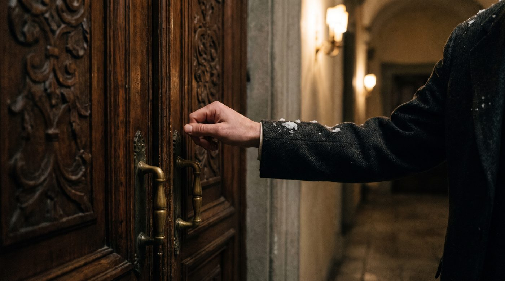
Пожилая рука стучит в старинную дубовую дверь.
♪ Вальс тише
⏱ Три стука
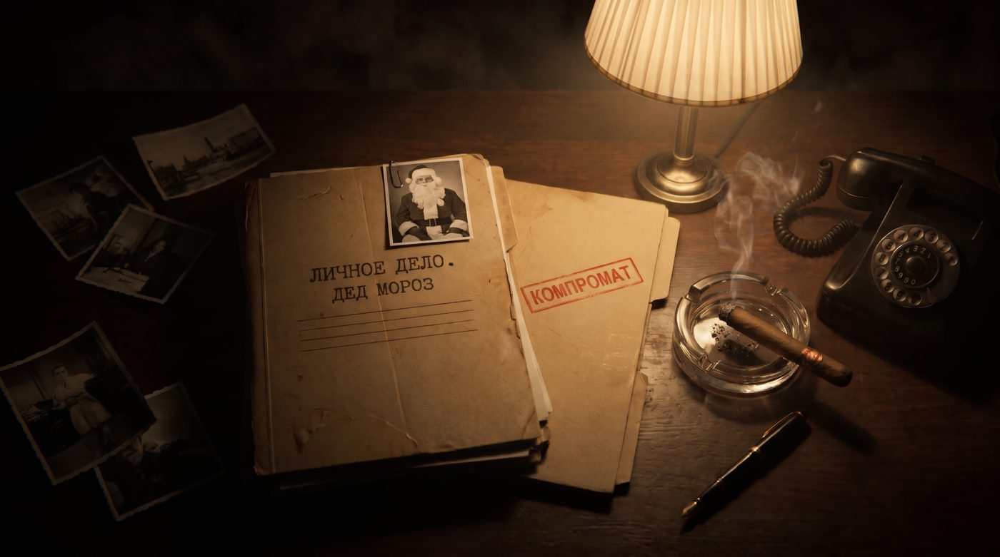
Папки «Личное дело. Дед Мороз» и «Компромат», сигара, телефон.
♪ Вальс тихо
⏱ Тиканье часов
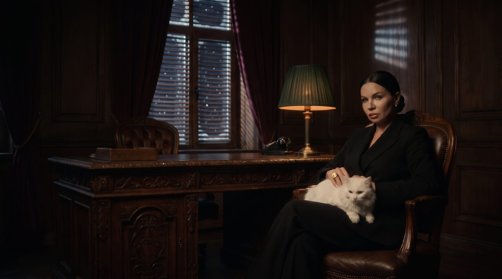
Настя в кресле у стола, окно с жалюзи за ней. Камера стоит у двери.
♪ Вальс тихо
⏱ Тиканье, мурлыканье
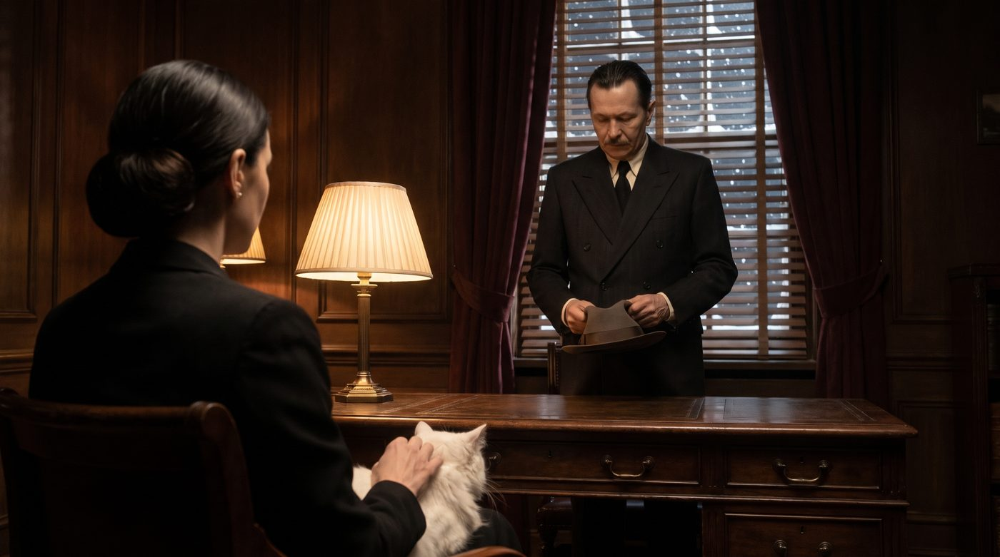
Менеджер стоит в дверях, шляпа в руках.
Менеджер: «Крёстная… мне очень нужен Дед Мороз. Это вопрос жизни и смерти. Я прошу тебя… помоги»
♪ Вальс уходит
⏱ С ботинок капает талый снег
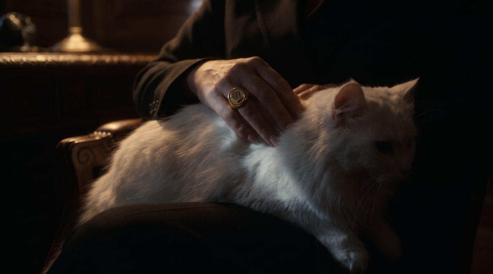
Рука с перстнем гладит кота.
Без музыки
⏱ Кот открывает один глаз
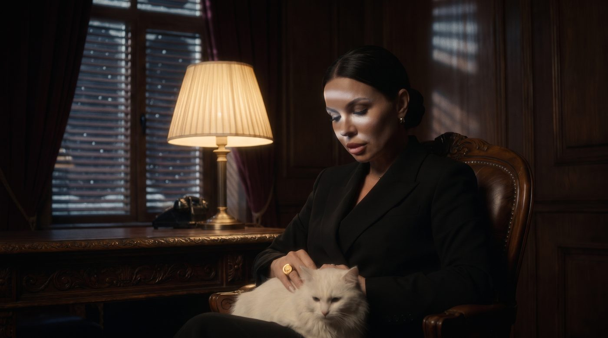
Тот самый: Настя гладит кота, наклоняет голову.
Настя: «Значит, я правильно поняла? Ты, сука (тише), посмел явиться в мой дом ночью… и просить у меня Деда Мороза? На самую горячую дату?»
Без музыки
⏱ Пауза, только тиканье
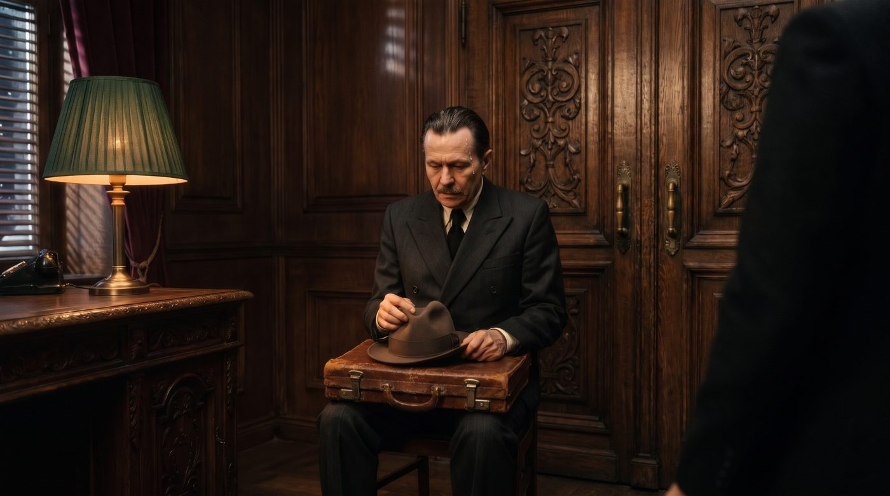
Менеджер на стуле у двери, шляпа и портфель на коленях.
Менеджер: «Да, Крёстная мать… Прости, Крёстная мать»
Без музыки
⏱ Тиканье ускоряется
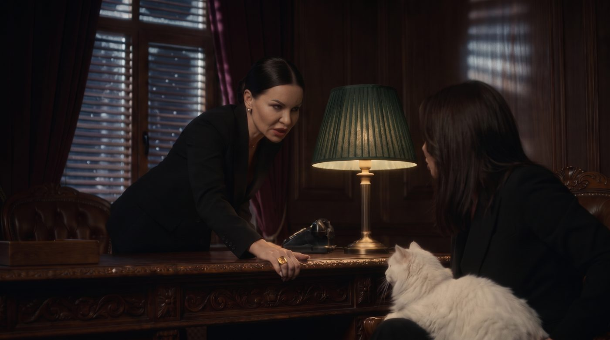
Второй дубль того же клипа: она поднимает холодный взгляд.
Настя: «У меня есть Дед Мороз. Но как ты просишь? Ты просишь это, сука… без уважения»
Без музыки
⏱ Тиканье замолкает
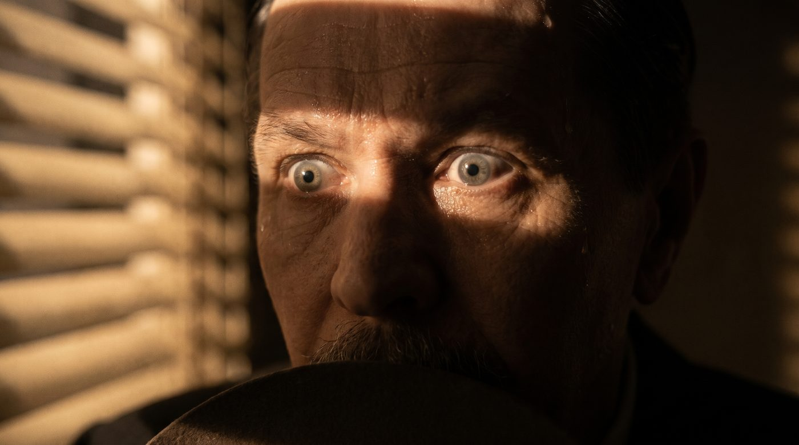
Испуганные глаза.
Менеджер: «Прости, Крёстная мать. Я сделаю всё что угодно»
Тишина
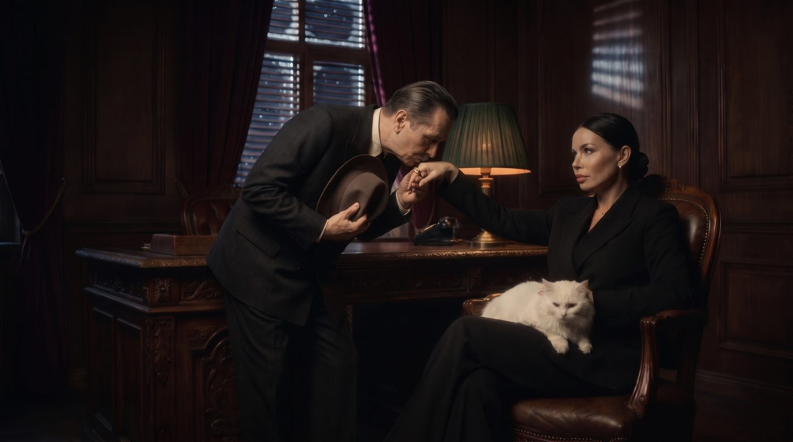
Настя у окна протягивает руку, менеджер подошёл от двери и целует перстень.
Настя: «Ладно. Я пойду тебе навстречу. Но ты будешь мне должен»
Менеджер: «Конечно, Крёстная мать. Я всегда к твоим услугам»
♪ ТЕМА ЛЮБВИ вступает на поцелуе
⏱ Кот фыркает на менеджера
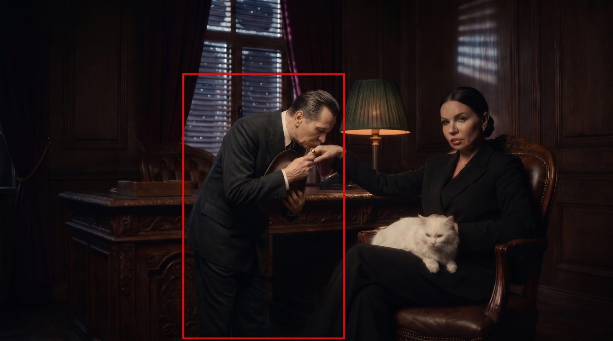
Настя у окна протягивает руку, менеджер подошёл от двери и целует перстень.
Настя: «Ладно. Я пойду тебе навстречу. Но ты будешь мне должен»
Менеджер: «Конечно, Крёстная мать. Я всегда к твоим услугам»
♪ ТЕМА ЛЮБВИ вступает на поцелуе
⏱ Кот фыркает на менеджера